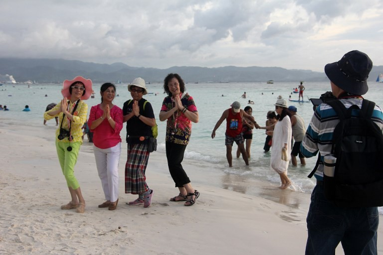
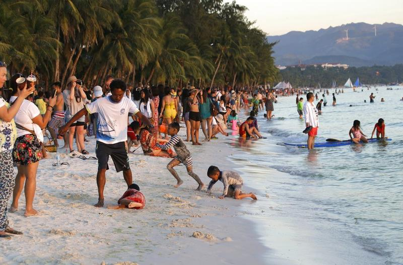
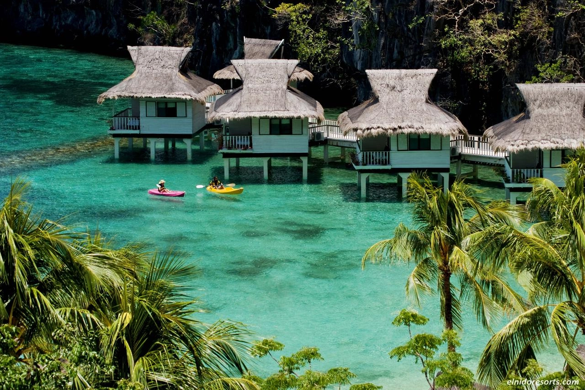

Tourism in the Philippines
Tourism in the Philippines has been a double-edged sword, contributing significantly to the country's economy while also raising concerns about its consequences. The archipelago boasts stunning landscapes, pristine beaches, and vibrant cultural heritage, making it a magnet for tourists worldwide.
The Positive Side
On the positive side, tourism has been a crucial economic driver, generating revenue, providing jobs, and fostering local businesses. Popular destinations like Boracay, Palawan, and Cebu have seen a surge in infrastructure development to accommodate the increasing number of visitors. This influx has created employment opportunities and improved living standards in these areas.
Challenges
However, the rapid growth in tourism has led to environmental challenges. Overcrowding and inadequate waste management in popular spots have resulted in pollution, threatening the very natural beauty that attracts tourists. The delicate ecosystems of coral reefs and marine life suffer from the impact of irresponsible tourism practices.
Cultural consequences also emerge as traditional communities may face the risk of losing their authenticity amid the influx of foreign influences and commercialization. The focus on catering to tourists can sometimes overshadow the preservation of local heritage.
Sustainable Tourism
Efforts to promote sustainable tourism are gaining traction, with initiatives to balance economic gains with environmental and cultural preservation. The Philippine government and local communities are implementing measures to regulate visitor numbers, promote eco-friendly practices, and raise awareness about responsible tourism.
Challenging the Balance
In navigating the tourism landscape, the Philippines faces the challenge of maintaining a delicate balance between economic growth and the preservation of its unique natural and cultural assets.